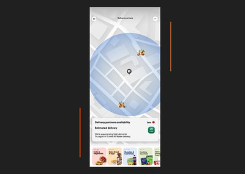
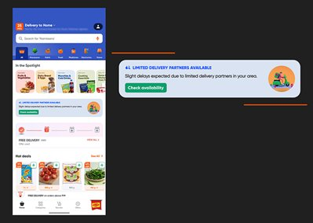

It all started with something simple — groceries
I live near a Swiggy Instamart storeroom (dark store), barely 500 meters away. For months, I was amazed by how fast I received my orders. Even at 9 PM. I'd get a knock at my door in 5–7 minutes.
Fast, efficient, and perfect.
But recently, something changed.
After 8 PM, orders started getting delayed. Items would be packed instantly, often within 2 minutes, but then — silence.
They tried to assign a delivery executive from their end and told me to wait for 30 minutes. Then, the order got cancelled. Most of the time, I ended up cancelling it myself after waiting for over 1.5 hours. No groceries, just frustration.
This wasn't a technical error. This was a human capacity mismatch during peak hours — too many orders, too few delivery partners.
But as a user, I had zero visibility into this. I felt ignored.
What if Swiggy simply showed the current executive availability before I placed the order?
Proposals
Proposed user flow
What the panel shows

UI Suggestion — Delivery partner availability screen with map and real-time status

UI Suggestion — Delivery partner availability banner on the home screen
A simple heads-up could prevent frustration, cancellations, and operational waste. Win-win situation.
Swiggy already tracks delivery executive availability in real-time. So showing that to users is technically feasible.
Impact
This small UX improvement could have a big impact:
All that — with one little banner.
It takes 50 good deliveries to build trust. It takes just one silent delay to break it. Give users the visibility they deserve.